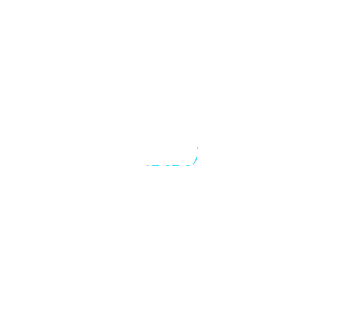
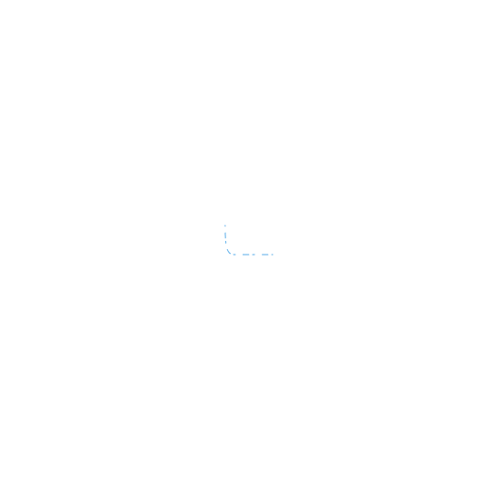
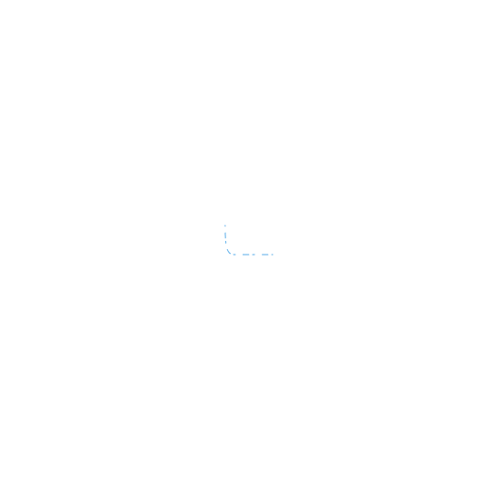
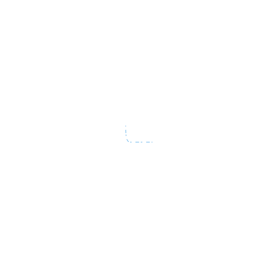

slide0


UKPDS
Начало UKPDS
UKPDS 33
Интенсивный контроль
уровня глюкозы в крови
уровня глюкозы в крови
UKPDS 34
Интенсивный контроль
гликемии метформином
гликемии метформином
UKPDS 80
10-летнее наблюдение
UKPDS 91
Последние результаты
Исследование
UKPDS
The United Kingdom Prospective Diabetes Study
Британское Проспективное исследование
сахарного диабета
года
изучения
сахарного диабета
сахарного диабета
42-летнее наблюдение UKPDS подчеркивает
необходимость раннего строгого контроля гликемии сразу после постановки диагноза
сахарного диабета 2 типа,
особенно при приеме метформина, для снижения пожизненного риска осложнений
и смерти, связанных с диабетом 2 типа
slide1

Основные цели исследования:
Контроль гликемии
Определить, как интенсивный контроль уровня глюкозы в крови риск
развития микрососудистых и макрососудистых осложнений при СД2
Контроль артериального давления
Оценить влияние жесткого контроля АД на частоту осложнений, связанных
с диабетом
Осложнения
Сосредоточится на профилактике и смягчении микрососудистых
и макрососудистых осложнений
Долгосрочные результаты
- Оценить устойчивость и долгосрочные преимущества стратегий раннего интенсивного лечения
- Изучить концепцию «эффекта наследия» или «метаболической памяти»
Исследование
UKPDS
Начатое в 1977 году Британское проспективное исследование диабета (UKPDS) является
одним из крупнейших и наиболее влиятельных знаковых исследований диабета 2 типа
slide2


Начало UKPDS
Интересные факты
Гипотеза:
Раннее снижение уровня глюкозы в крови до нормального уровня с помощью любого из лекарственных препаратов снизит вероятность осложнений, связанных с сахарным диабетом, и макрососудистых нарушений, которые являются основной причиной смертности и тяжелых осложнений при сахарном диабете 2 типа
Дизайн: Рандомизированное контролируемое исследование
Популяция: Впервые выявленные пациенты с СД2, N = 4209
Интенсивная терапия сульфонилмочевиной или инсулином: N = 2729
Интенсивная терапия Метформином у пациентов с избыточной массой: N = 342
Традиционная терапия (диета): N = 1132, из них с избыточной массой: N = 411
Конечные точки
Серьезные сердечно–сосудистые события
Диабетическая ретинопатия
Диабетическая нефропатия
Клинические исходы
Все связанные с СД 2 типа события
Смертность, связанная с СД 2 типа
Смертность от любых причин
slide3
slide4
slide5
slide6
slide7
slide8

 


1977
1977
2024